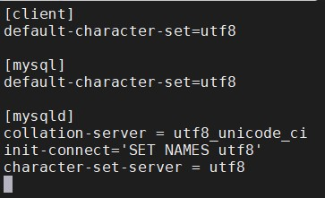
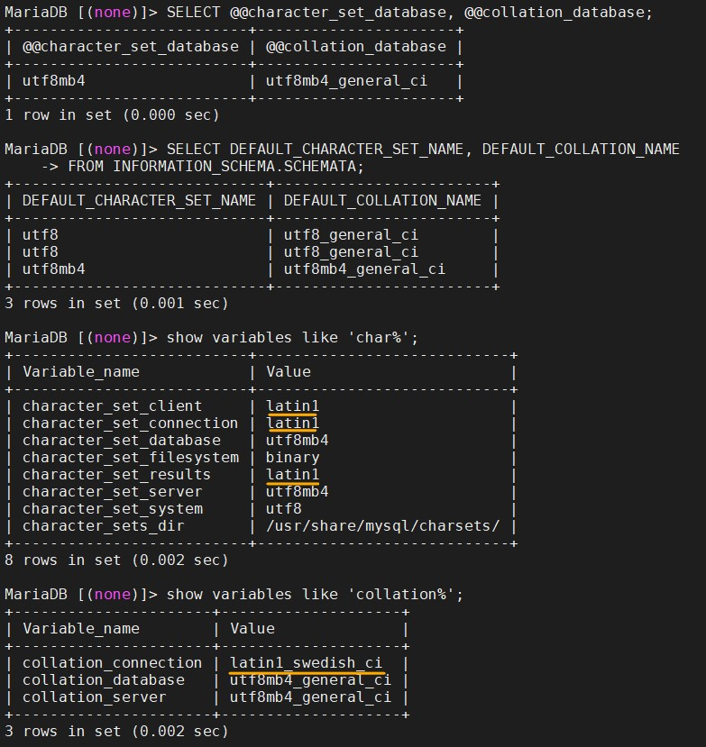

MariaDB
記錄我在 VCS 上操作 container:MariaDB 的過程，以及一些問題要如何克服。
部分是從 DockerHub > Database > MariaDB 複製過來。
--
Content:
reference:
啟動 container
記得先把連動的實體資料夾開好，並把該資料夾的使用者以及群組設定好，再執行下面指令。
docker run \
--name some-mariadb \
-e MYSQL_ROOT_PASSWORD=<your_password> \
-v /datamount/mariadb/data:/var/lib/mysql \
-v /datamount/mariadb/conf.d:/etc/mysql/conf.d \
-p 3307:3306 \
-d mariadb
docker run --name some-mariadb -e MYSQL_ROOT_PASSWORD=<your_password> -v /datamount/mariadb/data:/var/lib/mysql -v /datamount/mariadb/conf.d:/etc/mysql/conf.d -p 3307:3306 -d mariadb編碼
進入 container、mariaDB:
docker exec -it some-mariadb bash
mysql -u root -p
> show databases;
> exit查看 mariaDB 的 character-set-server 和 collation-server:
docker exec -it some-mariadb bash
mysql -u root -p
> SELECT @@character_set_database, @@collation_database; <br>
> SELECT DEFAULT_CHARACTER_SET_NAME, DEFAULT_COLLATION_NAME FROM INFORMATION_SCHEMA.SCHEMATA; // 另一種作法。
> <br>
> show variables like 'char%'; <br>
> show variables like 'collation%'; <br>
> exit修改 Configuration file 與結果:
即連動資料夾下，新增 my.cnf，修改裡面內容。
修改之後要重啟 container。
[client]
default-character-set=utf8
[mysql]
default-character-set=utf8
[mysqld]
collation-server = utf8_unicode_ci
init-connect='SET NAMES utf8'
character-set-server = utf8
